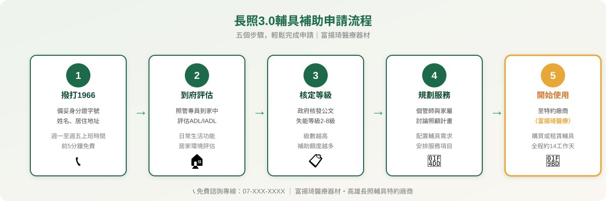
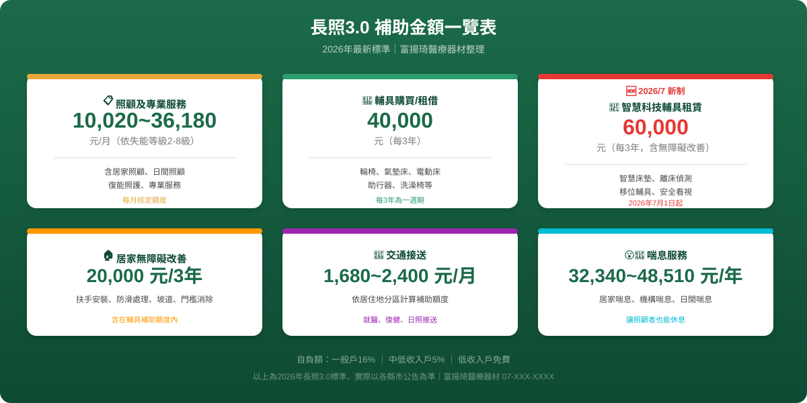
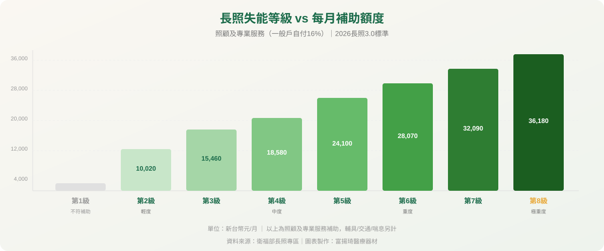

2026年長照3.0全面上路，輔具補助再升級。富揚琦為政府特約廠商，免費協助您完成申請流程。
從撥打專線到開始使用，約需14個工作天
備好身分證字號
週一至五上班時間
前5分鐘免費
照管專員到家中
評估ADL/IADL
生活功能
核發等級公文
第2~8級
確認補助額度
個管師與家屬
討論照顧計畫
配置輔具需求
至特約廠商
（如富揚琦）
購買或租賃輔具
| 補助項目 | 補助額度 | 補助週期 | 備註 |
|---|---|---|---|
| 輔具購買／租借 | 最高 40,000 元 | 每 3 年 | 輪椅、氣墊床、護理床等 |
| 智慧科技輔具租賃 🆕 | 最高 60,000 元 | 每 3 年 | 2026/7/1起，含居家無障礙 |
| 居家無障礙環境改善 | 最高 20,000 元 | 每 3 年 | 扶手、防滑、門檻消除等 |
| 照顧及專業服務 | 10,020～36,180 元／月 | 每月 | 依失能等級 2～8 級 |
| 交通接送 | 1,680～2,400 元／月 | 每月 | 依居住地區分區計算 |
| 喘息服務 | 32,340～48,510 元／年 | 每年 | 依失能等級 |
※ 自負額依身分別：一般戶16%、中低收入5%、低收入戶免費
※ 以上為2026年長照3.0最新標準，實際補助以各縣市公告為準
※ 富揚琦為政府長照輔具特約廠商，可協助您完成補助申請流程
符合以下任一條件，即可撥打1966申請評估
日常生活活動（ADL）有困難，需要他人協助的長者，皆可申請長照服務。
原住民族因健康條件差異，申請年齡門檻降低至55歲。
長照3.0放寬至不分年齡，未滿50歲的失智症患者同樣可申請。
各年齡層持有身心障礙證明，且有日常生活照顧需求者皆可申請。
PAC（Post-Acute Care）出院後，有持續照顧需求者可納入長照服務。
自2025年9月起，已聘外籍看護的家庭仍可申請，每月額度30%可用於社區式服務。


